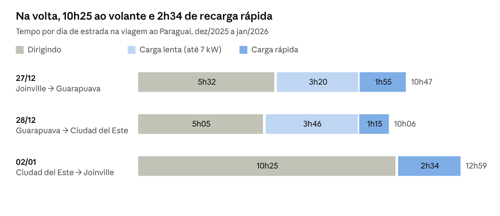
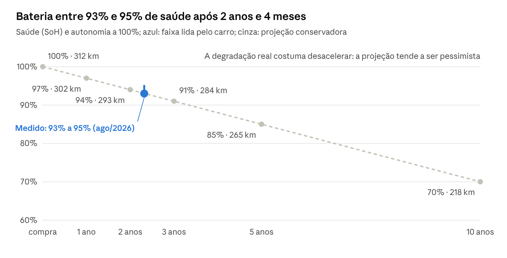
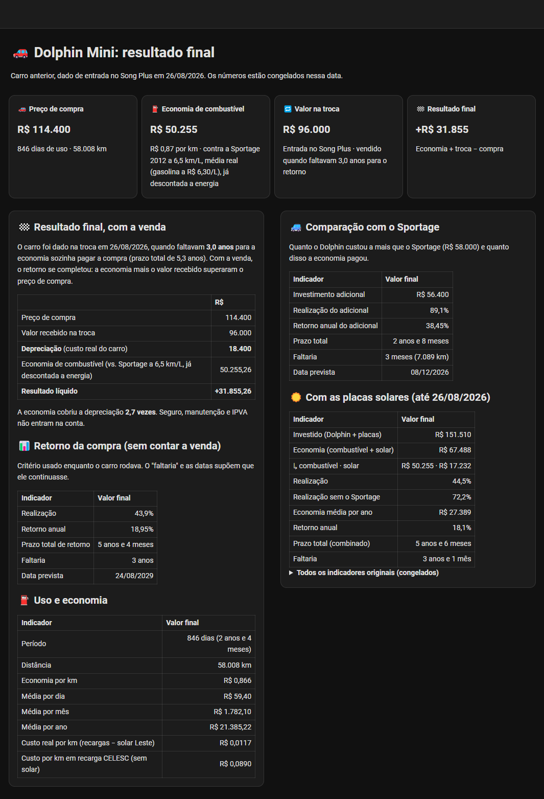
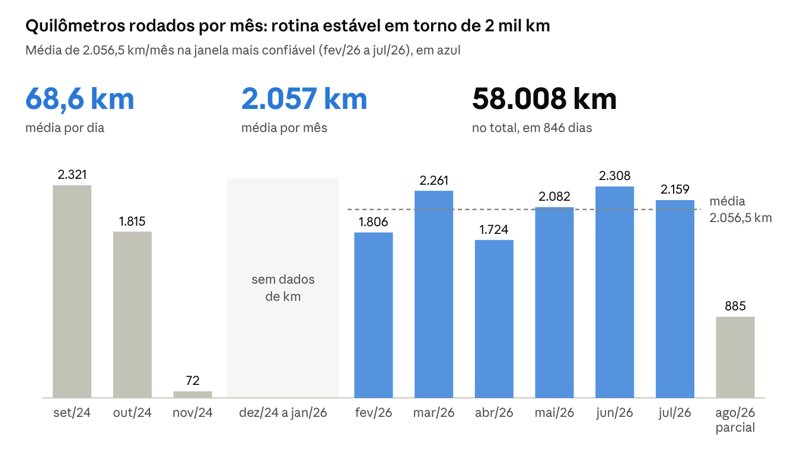
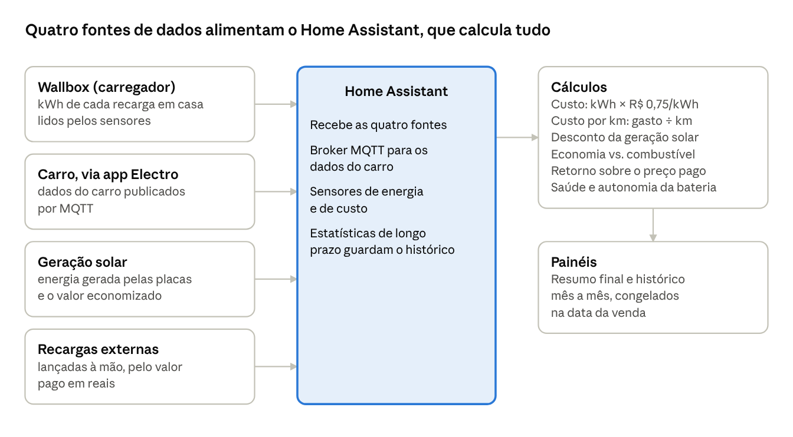
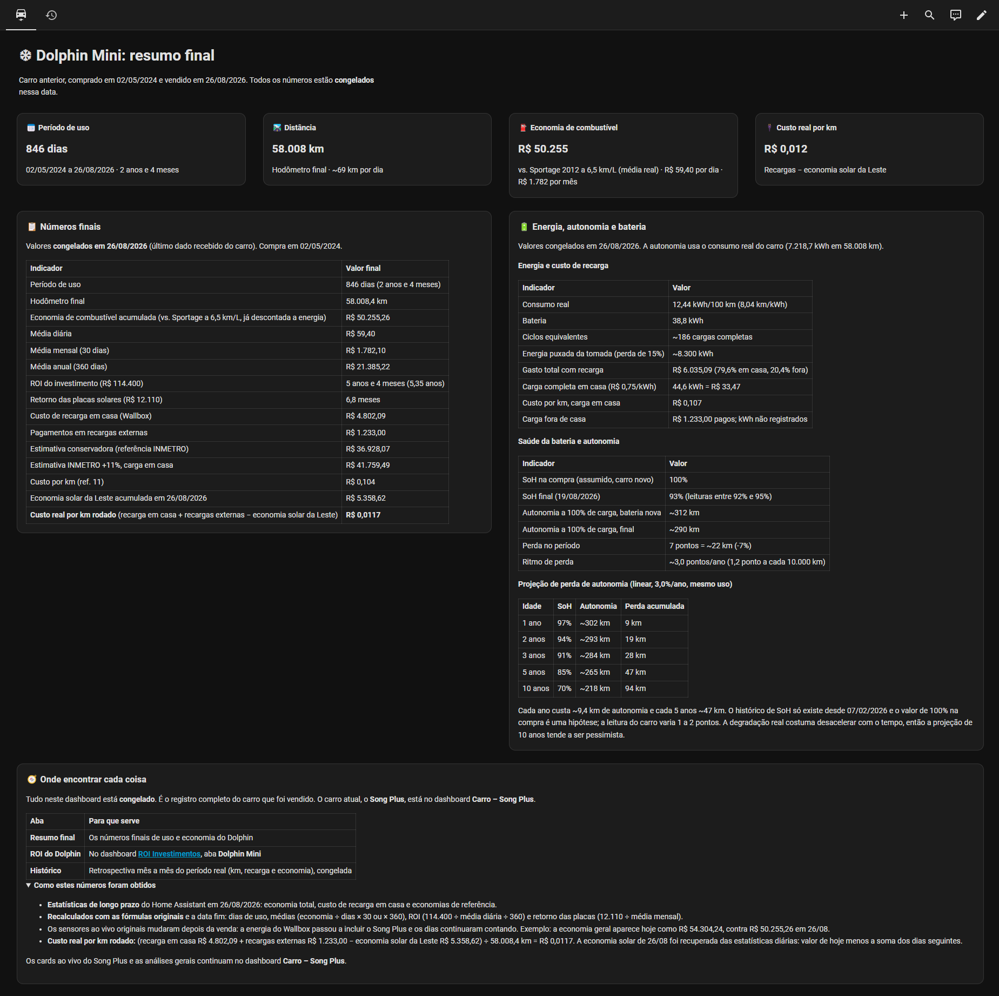
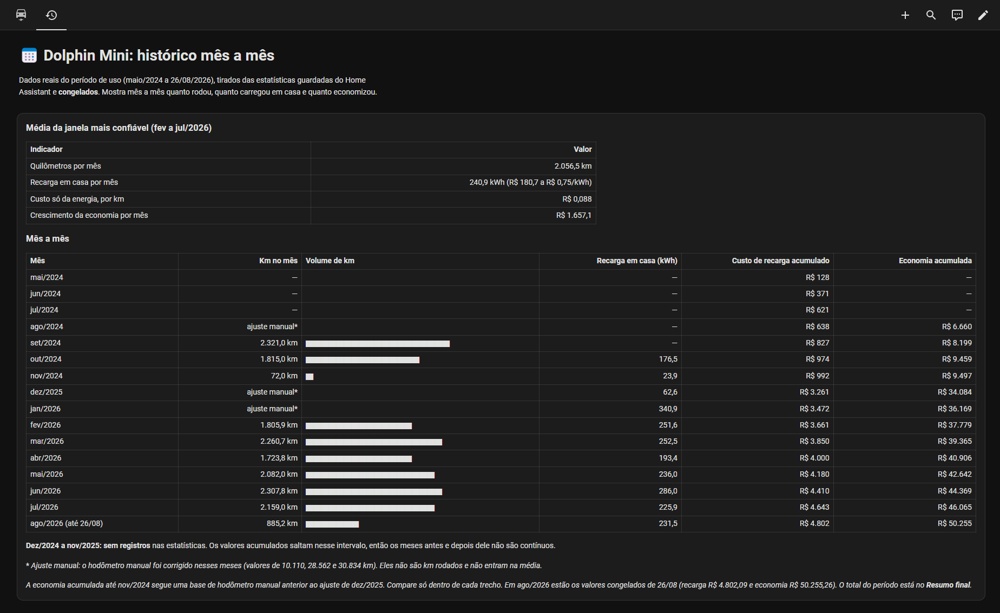

Dolphin Mini: 846 dias e 58 mil km em números
Resumo
Em 846 dias e 58.008 km, o BYD Dolphin Mini custou cerca de R$ 0,012 por km de energia (descontada a geração solar própria), terminou com a saúde da bateria oscilando entre 93% e 95% e foi revendido com 16% de desvalorização.
O carro foi comprado novo em maio/2024 por R$ 114.400 e vendido em agosto/2026 por R$ 96.000. Os dados vêm de um registro pessoal no Home Assistant, que acompanhou o carro, o carregador doméstico (wallbox) e a geração solar da casa. Os números estão congelados na data da venda. A viagem mais longa, de Joinville ao Paraguai e volta, somou 1.566 km a R$ 0,22 por km, com recarga em eletropostos públicos. O custo por km na estrada foi o dobro do urbano: a economia está, sobretudo, na rotina carregando em casa.
Antes dos números, o principal: na prática, a experiência foi muito significativa, e eu gostei demais do carro. A tecnologia embarcada, o conforto, a multimídia e, principalmente, a experiência de dirigir, com o torque imediato do motor elétrico, fizeram do Dolphin Mini um carro gostoso de usar todos os dias. E ele foi resistente: o jogo original de pneus durou até 52 mil km, com rodízio a cada 10 mil km, antes de chegar à marca de segurança de desgaste.
| Indicador | Valor |
|---|---|
| Período de uso | 846 dias (2 anos e 4 meses) |
| Distância rodada | 58.008 km (~69 km por dia) |
| Saúde final da bateria | 93% a 95%, conforme época do ano e recarga (assumindo 100% na compra) |
| Custo de energia por km, carga em casa | R$ 0,107 |
| Custo real por km, descontada a geração solar | R$ 0,0117 |
| Economia de combustível | R$ 50.255 contra a Sportage · ~R$ 23,2 mil contra um Polo 1.0 TSI (já descontada a energia) |
| Desvalorização total | R$ 18.400 (16%) |
Os três carros: especificações
A economia do artigo é medida contra duas referências: a Kia Sportage 2012 que o Dolphin Mini substituiu, que é a minha percepção real, e um VW Polo 1.0 TSI automático, um compacto a gasolina de porte e conforto equivalentes.
| Especificação | BYD Dolphin Mini GS 2025 (4 lugares) | Kia Sportage 2012 2.0 automática | VW Polo 1.0 TSI automático 2025 |
|---|---|---|---|
| Papel na comparação | O carro do artigo | Referência real (o carro que eu tinha) | Referência de mesmo porte |
| Motorização | Elétrica, 75 cv e 13,8 kgfm | 2.0 flex, 169 cv e 20 kgfm | 1.0 turbo flex, 109 cv e 16,8 kgfm |
| Câmbio | Redução única | Automático de 6 marchas | Automático de 6 marchas |
| Energia | Bateria LFP de 38,8 kWh | Tanque de 58 L | Tanque de 49 L |
| Autonomia oficial | 280 km | 516 km na cidade | 613 km na cidade |
| Consumo de ficha (gasolina) | — | 8,9 km/L cidade · 11,2 estrada | 12,5 km/L cidade · 15,1 estrada |
| Consumo usado no artigo | 12,44 kWh/100 km (real) | 6,5 km/L média · 8,5 em viagem (real) | 12,5 cidade · 15,1 estrada (ficha) |
| Custo por km de energia | R$ 0,104 (média de energia) · R$ 0,012 (com solar) | R$ 0,969 (6,5 km/L) | R$ 0,504 (cidade) · R$ 0,417 (estrada) |
| Recarga | 6,6 kW (AC) · 40 kW (DC) | — | — |
| Velocidade máxima | 130 km/h | 184 km/h | 192 km/h |
| Porta-malas | 230 L | 564 L | 300 L |
| Peso | 1.239 kg | 1.417 kg | 1.154 kg |
| Comprimento · entre-eixos | 3.780 · 2.500 mm | 4.445 · 2.640 mm | 4.074 · 2.566 mm |
Fichas técnicas: Canal VE (Dolphin Mini GS), Ficha Completa (Sportage LX 2.0 AT 2012) e Ficha Completa (Polo Comfortline 1.0 TSI 2025); capacidade da bateria conforme o painel do carro; custo por km com gasolina a R$ 6,30. A Sportage é a referência real, mas é um SUV maior e mais gastão; a média dela (6,5 km/L) ficou bem abaixo da ficha, o que é comum num SUV a gasolina com mais de dez anos. O Polo entra como comparação justa de porte e conforto: um compacto automático que um comprador de Dolphin Mini também consideraria.
O que estes 846 dias ensinaram
A economia mora na cidade. Carregando em casa, o km custou R$ 0,107 (R$ 0,012 com a geração solar); na estrada, com carga pública, R$ 0,22. E depende da referência: contra a minha Sportage foram R$ 50 mil em combustível; contra um compacto equivalente, cerca de R$ 23 mil.
A bateria não foi problema. No fim do período, a saúde lida pelo carro oscilava entre 93% e 95%, uma perda estimada de 5 a 7 pontos em 2 anos e 4 meses, e a rotina nunca dependeu da autonomia de ficha: o carro ia para a tomada no máximo perto dos 15%, o que dava uns 245 a 265 km reais por carga.
Estrada longa é viável com planejamento, mas cobra em tempo. Foram 1.566 km até o Paraguai, com carga lenta gratuita nas paradas e rápida só quando o tempo era crítico.
Manutenção é barata; reparo de lataria, não. As revisões de tabela custam R$ 370 ou R$ 1.000, mas um engavetamento foi orçado em R$ 45,9 mil e um para-lama ralado em R$ 4,6 mil.
Seguro é indispensável e deve ser escolhido pela rede de reparo. Ele cobriu o sinistro grande e preservou a garantia por reparar na concessionária; os pequenos reparos ficaram sem saída boa.
Os contras que poucos contam
Gostei muito do carro, mas ele tem limitações que só aparecem no uso:
Porta-malas pequeno: são 230 litros. Para a rotina serve; para viagem com a família, o espaço aperta.
Cinco lugares só no papel: algumas versões são vendidas com 5 lugares, mas o espaço interno é o mesmo, e dificilmente cabem 3 adultos no banco de trás.
Banco traseiro sem iluminação: parte do banco de trás não tem luz interna, o que atrapalha quem tem criança pequena, principalmente à noite.
Suspensão macia: não agrada a todo mundo, e a mim não chegou a incomodar. O ponto de atenção é curva em velocidade alta com buraco no meio: em duas situações, por volta de 90–100 km/h, o carro mostrou certa instabilidade e deu um susto.
Pneus dianteiros gastam bem mais rápido: a tração e o peso ficam na frente, então o rodízio a cada 10 mil km é o que faz o jogo durar.
Como o carro foi usado
O uso foi exclusivamente particular, sem aplicativo de transporte nem uso comercial: rotina urbana em Joinville (SC) e viagens de fim de semana e férias.
Rotina: idas e vindas ao trabalho e levar o filho à escola.
Lazer: passeios à praia no litoral catarinense, com idas a São Francisco do Sul em praticamente dois fins de semana por mês, às vezes mais. Cada trecho tem de 45 a 65 km, conforme a praia; ida e volta nesses fins de semana somam cerca de 180 a 260 km por mês (estimativa).
Viagens rodoviárias a partir de Joinville:
| Destino | Ida | Ida + volta | Frequência |
|---|---|---|---|
| São Francisco do Sul (SC) | 45–65 km | 90–130 km | ~2 fins de semana por mês |
| Rio Negrinho (SC) | 94 km | 188 km | Eventual |
| Curitiba (PR) | 130 km | 260 km | Eventual |
| Florianópolis (SC) | 177 km | 354 km | Eventual |
| Ituporanga (SC) | 205 km | 410 km | Eventual |
| Tubarão (SC) | 300 km | 600 km | Eventual |
| Ciudad del Este (Paraguai) | — | 1.566 km | 1 viagem |
Custo de ida + volta
| Destino | Carga de casa | Carga na estrada | Total elétrico |
|---|---|---|---|
| São Francisco do Sul | R$ 11,91–17,21 | — | R$ 11,91–17,21 |
| Rio Negrinho (serra) | R$ 24,22 | — ¹ | R$ 24,22 |
| Curitiba (serra) | R$ 30,18 | R$ 8,40 ² | R$ 38,58 |
| Florianópolis | R$ 30,18 | R$ 41,77 | R$ 71,95 |
| Ituporanga | R$ 30,18 | R$ 60,33 | R$ 90,51 |
| Tubarão | R$ 30,18 | R$ 123,32 | R$ 153,50 |
| Paraguai ³ | ~R$ 30,18 | R$ 340,93 | ~R$ 371,11 |
A comparação a seguir tem duas referências. A Sportage é a minha percepção real, o carro que eu tinha. Como ela é um SUV maior e mais gastão, incluí também um carro a gasolina de porte e conforto parecidos com os do Dolphin Mini: o VW Polo 1.0 TSI automático 2025.
| Destino | Elétrico | Sportage | Economia | Polo TSI | Economia |
|---|---|---|---|---|---|
| São Francisco do Sul | R$ 11,91–17,21 | R$ 87–126 | R$ 75–109 | R$ 38–54 | R$ 26–37 |
| Rio Negrinho | R$ 24,22 | R$ 139 | R$ 115 | R$ 78 | R$ 54 |
| Curitiba | R$ 38,58 | R$ 193 | R$ 154 | R$ 108 | R$ 70 |
| Florianópolis | R$ 71,95 | R$ 262 | R$ 190 | R$ 148 | R$ 76 |
| Ituporanga | R$ 90,51 | R$ 304 | R$ 213 | R$ 171 | R$ 81 |
| Tubarão | R$ 153,50 | R$ 445 | R$ 291 | R$ 250 | R$ 97 |
| Paraguai | ~R$ 371 | R$ 1.161 | ~R$ 790 | R$ 653 | ~R$ 282 |
¹ Cabe na carga de casa: usa cerca de 27,5 kWh e chega em casa com uns 28%. ² Na prática eu carregava mais em Curitiba; veja abaixo. ³ Valores reais pagos na estrada; carga de casa estimada.
Como os custos de ida + volta foram estimados:
Eficiência considerada: 15,0 kWh/100 km (6,7 km/kWh), uma estimativa conservadora para estrada a 90–100 km/h. É cerca de 20% acima dos 12,6 kWh/100 km medidos na viagem ao Paraguai, que misturou trechos mais lentos, e dos 12,44 kWh/100 km da média geral do carro. Acima de 100 km/h, o consumo sobe mais rápido. Nos trechos de serra (Curitiba e Rio Negrinho), a conta usa o consumo real por sentido: a subida gastava cerca de 60% da bateria em Curitiba, uns 17,5 kWh/100 km, e a descida uns 40%, cerca de 11,7 kWh/100 km.
Carga de casa: saída de casa com 100% e chegada de volta com 10% de reserva, ou seja, 90% de 38 kWh disponíveis da carga de casa (34,2 kWh), cerca de 228 km nessa velocidade. A carga de casa é o que se repõe na tomada depois da viagem. Energia de casa a R$ 0,75/kWh mais 15% de perda na recarga, ou R$ 0,88 por kWh que chega à bateria.
Recarga na estrada: tudo o que faltar para ir e voltar, em carga rápida a R$ 2,21/kWh, a média paga no Paraguai. A conta supõe que não há recarga no destino; carregar por lá derruba o custo da volta.
Paraguai: os valores são os reais, com a carga de saída de casa estimada.
Sportage: gasolina a R$ 6,30/L, com 8,5 km/L nas viagens de estrada e 6,5 km/L (a média real) nas idas a São Francisco do Sul. Pedágios não entram, porque são iguais para os dois.
Na prática, Curitiba e Rio Negrinho: a serra pesa. Subir até Curitiba consumia cerca de 60% da bateria, e descer, uns 40%: a ida e volta usava praticamente a bateria inteira, cerca de 38 kWh, o número usado na tabela. Por isso eu sempre carregava em Curitiba, pelo menos de 30% a 50% da bateria, como margem de segurança para a volta. Em carga rápida a R$ 2,21/kWh, essa margem custaria de R$ 25 a R$ 42, mais do que os R$ 8,40 da tabela, que considera carregar só o necessário para chegar em casa com 10%. Rio Negrinho (94 km pela Serra Dona Francisca) usa a mesma eficiência: com o mesmo padrão de subida e descida, a ida e volta consome cerca de 27,5 kWh e cabe na carga de casa, com chegada em uns 28%; ainda assim, a serra justifica uma recarga por lá se o trajeto incluir passeios pela região.
O Polo considera o consumo de estrada do INMETRO, 15,1 km/L com gasolina a R$ 6,30 (conforme a ficha técnica); na serra ele também gastaria mais, o que deixa a economia desses trechos subestimada. Só as idas à praia, em dois fins de semana por mês, somam de R$ 151 a R$ 218 de economia mensal contra a Sportage, ou de R$ 51 a R$ 74 contra o Polo.
Distância de São Francisco do Sul: cerca de 47 km até o centro e 67 km até a Praia da Enseada, por estrada (referência).
Também foi feita uma viagem até o Paraguai com o Dolphin Mini. Os números dessa viagem estão na seção a seguir.
Distâncias de referência: Curitiba, Florianópolis, Ituporanga e Tubarão, consultadas em 05/11/2026; a rota real de cada viagem pode variar.
Viagem ao Paraguai
Em 1.566 km entre Joinville e Ciudad del Este, a energia paga somou R$ 340,93, ou R$ 0,22 por km, mesmo com recarga quase toda em eletropostos públicos.
Roteiro: 27/12/2025 Joinville → Guarapuava (PR), 28/12 Guarapuava → Ciudad del Este, e retorno direto Ciudad del Este → Joinville em 02/01/2026.

Na ida, a carga lenta foi pura comodidade: o carro ficava parado de qualquer forma (pernoite, refeições, passeios) e carregava de graça enquanto isso, sem espera dedicada. Foram 54 kWh sem custo. A carga rápida só fechou a autonomia necessária para seguir viagem. Na volta, feita num dia só, foram usadas apenas cargas rápidas, encerradas antes de a potência cair perto do fim da carga.
| Indicador | Valor |
|---|---|
| Distância considerada | 1.566 km |
| Energia consumida nos deslocamentos | 196,7 kWh |
| Consumo médio | 12,6 kWh/100 km (8,0 km/kWh) |
| Energia paga | 154,0 kWh por R$ 340,93 (R$ 2,21/kWh) |
| Custo por km | R$ 0,22 |
| Carga lenta (até 7 kW) | 54,1 kWh em 7h52, média de 6,9 kW, em boa parte gratuita |
| Carga rápida | 164,6 kWh em 5h44, média de 28,7 kW |
| Autonomia recuperada na carga rápida | ~230 km por hora de recarga |
O carro registrou 238,6 kWh de recarga, 84,6 kWh a mais que a energia paga. A diferença vem das cargas lentas gratuitas, das perdas de conversão e de sessões parciais.
| Veículo de comparação | Consumo | Custo da viagem (1.566 km) | Economia do Dolphin |
|---|---|---|---|
| BYD Dolphin Mini | 12,6 kWh/100 km (real) | R$ 340,93 (pago na estrada) | — |
| VW Polo 1.0 TSI automático 2025 | 15,1 km/L (estrada, INMETRO) | ~R$ 653 (estimado) | ~R$ 312 |
| Kia Sportage 2012 | 8,5 km/L (real, em viagem longa) | ~R$ 1.161 (estimado) | ~R$ 820 |
Na comparação, a gasolina foi considerada a R$ 6,30 por litro, sobre os mesmos 1.566 km. Aqui o elétrico entra só com o que foi pago na estrada; somando a carga de saída de casa, como na tabela de destinos, as economias ficam em ~R$ 282 contra o Polo e ~R$ 790 contra a Sportage.
Custos e economia
O gasto total com energia foi de R$ 6.035 em 58 mil km; 80% dele foi recarga em casa e 20% recarga fora.
| Item | Valor |
|---|---|
| Recarga em casa (wallbox, tarifa de R$ 0,75/kWh) | R$ 4.802,09 |
| Recargas externas pagas | R$ 1.233,00 |
| Geração solar própria no período | R$ 5.358,62 |
| Economia de combustível contra a Sportage (já descontada a energia) | R$ 50.255,26 |
| Estimativa conservadora (referência INMETRO) | R$ 36.928,07 |
| Estimativa INMETRO +11%, carga em casa | R$ 41.759,49 |
| Média da economia de combustível | R$ 59,40/dia · R$ 1.782,10/mês · R$ 21.385,22/ano |
O custo real por km soma a recarga em casa e as externas, desconta a geração solar e divide pela distância:
(R$ 4.802,09 + R$ 1.233,00 − R$ 5.358,62) ÷ 58.008,4 km = R$ 0,0117 por km
Retorno do investimento, como calculado no painel: R$ 114.400 dividido pela economia anual média dá 5,35 anos (cerca de 5 anos e 4 meses). A conta usa o preço cheio do carro e não desconta a revenda, então é uma referência conservadora, não um payback real.
A referência principal é o carro que o Dolphin substituiu, uma Kia Sportage 2012, com a média real de 6,5 km/L no uso geral (mais na estrada; em viagem longa ela fazia cerca de 8,5 km/L). Com gasolina a R$ 6,30, cada km na Sportage custava R$ 0,969; tirando o custo da energia do Dolphin (cerca de R$ 0,104), sobram R$ 0,865 economizados por km, que em 58.008 km dão os R$ 50.255. As duas estimativas do INMETRO são mais conservadoras e ficam como faixa inferior.
A Sportage é a minha referência real, mas não é um carro do mesmo porte. Contra um compacto a gasolina equivalente em tamanho e conforto, o VW Polo 1.0 TSI automático (12,5 km/L na cidade pelo INMETRO), cada km custaria R$ 0,504 em gasolina, e a economia do período cairia para cerca de R$ 23,2 mil (R$ 0,40 por km). É a conta que vale para quem está escolhendo entre um elétrico compacto e um compacto a combustão hoje.
Com e sem energia solar
As economias acima já consideram toda a recarga paga na tarifa, como se não houvesse placas solares. A geração solar entra como um ganho a mais, não como base da conta:
| Cenário | Custo de energia por km | Economia vs. Sportage | Economia vs. Polo TSI |
|---|---|---|---|
| Sem energia solar (toda recarga paga) | R$ 0,104 | R$ 50.255 | ~R$ 23.200 |
| Com a geração solar abatendo a recarga | R$ 0,012 | ~R$ 55.600 | ~R$ 28.600 |
A diferença entre as linhas é a geração solar atribuída à recarga no período, cerca de R$ 5,4 mil. Na prática, a energia solar ajuda, mas a economia do elétrico se garante mesmo sem ela. E as placas não saem de graça: foram um investimento próprio, de cerca de R$ 37 mil somando os dois sistemas da casa, que precisa ter o retorno avaliado à parte. Por isso, o número principal deste artigo é sempre o cenário sem solar.
Onde o elétrico mais economiza: uso urbano
O maior aprendizado sobre custo: para quem quer economizar, o carro 100% elétrico faz mais sentido no uso urbano, carregando em casa. Na estrada ele funciona bem, mas o custo por km dobra.
| Cenário | Preço da energia | Custo por km |
|---|---|---|
| Rotina urbana, carga em casa | R$ 0,75/kWh | R$ 0,107 |
| Rotina urbana, descontada a geração solar | — | R$ 0,012 |
| Viagem ao Paraguai, carga pública | R$ 2,21/kWh | R$ 0,22 |
Na cidade, o carro sai todo dia com a bateria carregada em casa durante a noite e raramente precisa de eletroposto. Na estrada, a carga rápida custa cerca de três vezes a tarifa residencial e exige planejar as paradas.
Em viagem longa, o custo que pesa é o tempo. Na viagem ao Paraguai, foram cerca de 21 horas ao volante e 13h36 conectado ao carregador: 7h52 de carga lenta, quase toda aproveitando paradas que aconteceriam de qualquer forma, e 5h44 de carga rápida, que é espera de fato. Vale pensar se esse tempo cabe no seu roteiro antes de escolher o elétrico para viagens longas frequentes.
Manutenção: revisões de tabela
A BYD divulgou no lançamento revisões a cada 20 mil km ou 1 ano, alternando R$ 370 e R$ 1.000. Pela tabela, os 58 mil km rodados corresponderiam a duas revisões, cerca de R$ 1.370, ou R$ 0,024 por km (estimativa).
| Revisão | Quilometragem | Valor de tabela | Acumulado |
|---|---|---|---|
| 1ª | 20.000 km | R$ 370 | R$ 370 |
| 2ª | 40.000 km | R$ 1.000 | R$ 1.370 |
| 3ª | 60.000 km | R$ 370 | R$ 1.740 |
| 4ª | 80.000 km | R$ 1.000 | R$ 2.740 |
| 5ª | 100.000 km | R$ 370 | R$ 3.110 |
| 6ª | 120.000 km | R$ 1.000 | R$ 4.110 |
| 7ª | 140.000 km | R$ 370 | R$ 4.480 |
| 8ª | 160.000 km | R$ 1.000 | R$ 5.480 |
| 9ª | 180.000 km | R$ 370 | R$ 5.850 |
| 10ª | 200.000 km | R$ 1.000 | R$ 6.850 |
Em 200 mil km, o plano soma R$ 6.850, ou cerca de R$ 0,034 por km. Elétrico não tem troca de óleo, filtro de combustível, velas ou embreagem, o que explica parte do valor baixo.
Pneus: o jogo original durou até 52 mil km, com rodízio a cada 10 mil km, antes de chegar à marca de segurança de desgaste. Num carro elétrico, que é mais pesado e tem torque imediato, o rodízio em dia fez diferença.
Valores de referência divulgados pela BYD no lançamento (fevereiro/2024), conforme Garagem360 e Auto+; podem ter sido reajustados, então confirme com a concessionária. Pneus, freios e seguro não estão incluídos.
Seguro: o perrengue de um modelo novo
O seguro se pagou num único sinistro de R$ 45,9 mil, mas também mostrou o lado menos falado de ter um carro recém-lançado: rede de oficinas despreparada e cobertura de acessórios limitada.
Apólice da Tokio Marine, contratada em 2024 e renovada em 2025 (também foram cotadas Allianz e Mapfre), com cobertura de colisão, incêndio e roubo/furto e oficina de livre escolha.
O perfil do principal condutor pesa muito no prêmio: idade e gênero mudam o preço, e o seguro foi fechado no perfil que resultava no valor menor. Vale um cuidado para quem pensar em fazer o mesmo: a apólice define o principal condutor como quem usa o carro na maior parte da semana, e informar alguém que não corresponde a esse perfil pode levar à perda da indenização.
Quanto custou o seguro
No primeiro ano, o seguro saiu por R$ 2.756,03, cerca de R$ 0,11 por km rodado: praticamente o mesmo que a energia de recarga em casa.
| Item | 1º ano (2024/25) | Renovação (2025/26) |
|---|---|---|
| Prêmio total | R$ 2.756,03 (R$ 2.566,61 + IOF de R$ 189,42), em 12x de ~R$ 230 | R$ 3.341,62 (contratada a franquia de 25%; a de 50% saía por R$ 2.847,54) |
| Classe de bônus | 10, trazida do seguro anterior, na Allianz | 10 |
| Franquia de casco | R$ 10.922, com isenção da 1ª franquia parcial | R$ 3.797 (25% da básica), em vez de R$ 7.595 (50%) |
| Carro reserva | 30 diárias | — |
| Oficina e peças | Livre escolha, peças novas originais | — |
Na contratação de 2024, com a mesma condutora, classe de bônus 10 e vigência de julho/2024 a julho/2025, a diferença entre seguradoras foi grande:
| Seguradora (cotação 2024/25) | Prêmio total | Franquia de casco | Observação |
|---|---|---|---|
| Tokio Marine (contratada) | R$ 2.756,03 | R$ 10.922 | Isenção da 1ª franquia parcial |
| Allianz | R$ 4.170,66 | R$ 8.883,12 | Casco a 110% da FIPE, isenção da franquia no 1º sinistro |
| Mapfre | R$ 7.612,02 | R$ 18.169,47 (com desconto de 50%) | Inclui seguro da franquia de R$ 4.423,30 |
A mais cara saiu 2,8 vezes acima da contratada, para o mesmo carro e a mesma condutora. Num elétrico recém-lançado, sem histórico de sinistros no mercado, cotar em várias seguradoras fez mais diferença do que qualquer ajuste de cobertura.
Na renovação, reduzir a franquia de 50% para 25% custava R$ 494 a mais por ano e baixava em R$ 3.798 o valor pago a cada sinistro de casco. Depois dos episódios abaixo, foi a opção contratada na renovação, e passou a ser a regra.
As franquias dos serviços rápidos do 1º ano também mostram o dilema dos pequenos reparos: R$ 80 no martelinho, R$ 155 em lataria e pintura, R$ 230 no reparo de para-choque e R$ 775 na troca, sempre fora da concessionária.
Na conta simples, os dois anos de seguro somam cerca de R$ 6,1 mil, contra um único orçamento de R$ 45,9 mil no engavetamento, que saiu sem franquia porque a culpa foi de terceiro. A cláusula de isenção da franquia quando o segurado não é culpado, listada entre os diferenciais da apólice, fez diferença real.
| Quando | Ocorrência | O que o seguro cobriu | Custo para o segurado |
|---|---|---|---|
| mar/2025 | Para-lama dianteiro esquerdo e moldura da roda ralados | Serviço rápido (martelinho, R$ 80 de franquia) cobriria só mão de obra; a troca da peça não é coberta | Concessionária orçou R$ 4.589,58; não compensava reparar |
| jun a set/2025 | Engavetamento, colisão dianteira e traseira | Reparo na concessionária BYD, orçado em R$ 45.867,84, e carro reserva | Zero: franquia isenta, porque a culpa foi de terceiro |
No caso de março/2025, a seguradora admitiu que muitas lojas credenciadas ainda não tinham capacitação para o modelo. Foi preciso credenciar uma funilaria indicada pela corretora, e a loja concluiu que a peça não tinha recuperação.
O dilema dos pequenos reparos: garantia
No para-lama ralado, o orçamento da concessionária, de março/2025, foi de R$ 4.589,58: R$ 2.989,58 em peças (para-lama e moldura da roda) e R$ 1.600 de funilaria e pintura. Para um dano pequeno, não valia a pena fazer o reparo.
O problema é que os pequenos reparos oferecidos pelo seguro (martelinho de ouro, vidros e acessórios, funilaria rápida) são feitos por lojas credenciadas da seguradora, fora da rede BYD. Esses serviços não davam garantia própria e, pior, colocavam em risco a garantia de fábrica do carro.
O Manual de Manutenção e Garantia do Dolphin, conforme reportagem do Garagem360, prevê o cancelamento automático da garantia quando o veículo é reparado fora da rede de concessionárias autorizadas BYD. Num elétrico, um para-choque ou para-lama abriga sensores e chicotes, e um reparo mal feito pode virar argumento para negar cobertura depois.
| Caminho para o dano pequeno | Custo | Risco |
|---|---|---|
| Serviço rápido do seguro, fora da BYD | Franquia baixa (R$ 80 a R$ 155) | Sem troca de peça, sem garantia do serviço e com risco à garantia de fábrica |
| Reparo na concessionária BYD | R$ 4.589,58 no orçamento do para-lama | Garantia preservada, mas caro para um dano estético |
| Não reparar | Zero | Dano aparente e possível desconto na revenda |
Com carro novo, o dano pequeno fica entre opções ruins. No caso do para-lama, a escolha foi não reparar.
A franquia pesa na mesma conta. Para usar a cobertura de casco no reparo na concessionária, o segurado paga a franquia, que no contrato podia ser a reduzida de 50% ou a de 25%. Depois desses episódios, a escolha passou a ser sempre a franquia reduzida de 25%: o prêmio sobe um pouco, mas o valor pago em cada sinistro cai, e reparar na BYD fica viável com mais frequência.
O aprendizado: antes de contratar o seguro de um elétrico novo, vale perguntar se a oficina referenciada é a concessionária da marca e como ficam os pequenos reparos.
O engavetamento: onde o seguro se pagou
O caso mais sério foi um engavetamento com o principal condutor ao volante, com o carro atingido na frente e atrás. O orçamento inicial da concessionária BYD, emitido em junho/2025, somou R$ 45.867,84, cerca de 40% do preço pago no carro.
| Item do orçamento | Valor |
|---|---|
| Peças (para-choques, tampa traseira, porta, longarina e radiador, entre outras) | R$ 37.867,84 |
| Mão de obra de funilaria | R$ 8.000,00 |
| Total | R$ 45.867,84 |
O seguro cobriu o reparo, e a seguradora ajudou no processo. Como o serviço foi feito na própria concessionária, a garantia de fábrica foi mantida. As peças levaram cerca de 20 dias para chegar e o serviço, mais uns 15 dias; nesse período houve carro reserva.
O orçamento é uma estimativa inicial e podia mudar após a desmontagem, segundo a própria concessionária.
O aprendizado: com carro de modelo novo, vale ler o guia de serviços antes de contratar, conferir se troca de peças entra na cobertura de vidros e acessórios e perguntar à corretora quais oficinas atendem o modelo.
Energia e consumo
O consumo real foi de 12,44 kWh a cada 100 km, ou 8,04 km por kWh, medido sobre 7.218,7 kWh em 58.008 km.
| Indicador | Valor |
|---|---|
| Consumo real | 12,44 kWh/100 km (8,04 km/kWh) |
| Capacidade da bateria | 38,8 kWh |
| Ciclos equivalentes | ~186 cargas completas |
| Energia puxada da tomada (perda de recarga estimada em 15%) | ~8.300 kWh |
| Carga completa em casa | 44,6 kWh = R$ 33,47 |
| Divisão do gasto com recarga | 79,6% em casa · 20,4% fora |
As recargas fora de casa foram registradas só pelo valor pago (R$ 1.233); a energia em kWh dessas recargas não foi registrada.
Saúde da bateria e autonomia
No fim do período, a leitura de saúde da bateria oscilava entre 93% e 95%, conforme a época do ano e a recarga. Partindo da premissa de 100% na compra, isso é uma perda estimada de 5 a 7 pontos em 2 anos e 4 meses, ou de 15 a 22 km de autonomia com carga completa (de ~312 km para ~290 a ~297 km). Como a leitura é uma estimativa do próprio carro, o artigo usa o cenário mais conservador, 93%, e explica a oscilação mais abaixo.
Nota: quando comprei o carro, eu não tinha conhecimento para verificar se a bateria estava com 100% de saúde, por isso esse ponto de partida é uma premissa. Só passei a acompanhar a leitura depois de cerca de um ano de uso, quando o carro já marcava algo entre 96% e 97%. O registro automático no Home Assistant começou mais tarde, em fevereiro/2026.

No cenário conservador (93%), o ritmo foi de cerca de 3 pontos por ano, ou 1,2 ponto a cada 10 mil km; no otimista (95%), cerca de 2 pontos por ano. A projeção do gráfico usa o cenário conservador, e como a degradação das baterias LFP costuma desacelerar com o tempo, ela tende a ser pessimista.
Autonomia de ficha x autonomia que dá segurança
Uma coisa é a autonomia com 100% de bateria; outra é a distância que você se sente seguro para rodar no dia a dia. Com carro elétrico, ninguém roda até zerar: quando o carro chegava por volta de 15%, no máximo, eu já o colocava para carregar em casa.
Na prática, a faixa usada era de 100% a 15%, ou 85% da bateria. Com o consumo medido, isso dava a autonomia real abaixo na maioria das vezes (estimativa a partir de 38,8 kWh de bateria e da saúde medida).
| Cenário | Consumo usado | Bateria nova (100%) | Bateria no fim (93%) |
|---|---|---|---|
| Rotina, de 100% a 15% | 12,44 kWh/100 km (média do período) | ~265 km | ~245 km |
| Estrada em ritmo misto (Paraguai), de 100% a 15% | 12,6 kWh/100 km (viagem ao Paraguai) | ~260 km | ~245 km |
| Estrada entre cargas rápidas, de 15% a ~80% | 12,6 kWh/100 km | ~200 km | ~185 km |
Com média de 69 km por dia, uma carga cobria com folga três dias de rotina. Na estrada, o ritmo prático era de 185 a 200 km entre paradas de carga rápida, já que a carga rápida perde velocidade perto do fim e compensa encerrar por volta de 80%. Velocidade alta, ar-condicionado e serra reduzem esses números; a perda de 22 km ao longo de dois anos não mudou a rotina.
Autonomia por velocidade média
A velocidade é o que mais mexe na autonomia. Com o carro novo, eu fazia até uns 320 km na cidade e uns 250 km na estrada a 100–110 km/h. A tabela parte desses dois pontos reais e preenche as outras faixas com estimativas coerentes com eles.
| Velocidade média | Consumo estimado | Bateria nova, 100% → 0% | Na prática, 100% → 15% | Saúde de 93%, 100% → 15% |
|---|---|---|---|---|
| Cidade (trânsito urbano) | ~12,1 kWh/100 km | ~320 km (uso real) | ~270 km | ~255 km |
| 80 km/h | ~13,0 kWh/100 km | ~300 km | ~255 km | ~235 km |
| 90 km/h | ~14,0 kWh/100 km | ~275 km | ~235 km | ~220 km |
| 100 km/h | ~15,0 kWh/100 km | ~260 km | ~220 km | ~205 km |
| 100–110 km/h | ~15,5 kWh/100 km | ~250 km (uso real) | ~215 km | ~200 km |
| 120 km/h | ~18,0 kWh/100 km | ~215 km | ~185 km | ~170 km |
Conta: 38,8 kWh dividido pelo consumo de cada faixa. As linhas em destaque são o meu uso; as outras são estimativas, e a de 120 km/h, que fica perto da velocidade máxima de 130 km/h, é a mais incerta. Os números de mercado batem com essa faixa: a autonomia oficial é de 280 km no ciclo PBEV; num teste da Revista Carro, o carro passou de 315 km na cidade com ar-condicionado ligado e ainda marcava 13% (Revista Carro); e num teste até zerar a bateria, no modo Eco, chegou a 20% aos 243 km e a 10% aos 272 km (Critical Hits). Ar-condicionado no máximo, chuva, vento e serra reduzem esses valores.
O painel nem sempre acertava a autonomia
Na percepção de uso, a autonomia mostrada no painel do Dolphin Mini não era assertiva, mesmo com uso dinâmico, e a imprecisão piorava quando a bateria ficava abaixo de 20%. A regra prática que funcionava era de cerca de 3 km por 1% de bateria, um pouco menos no uso urbano. Foi esse o motivo de nunca deixar o carro passar muito dos 15%.
Há explicação técnica para isso. O carro não mede a carga diretamente: o sistema de gerenciamento da bateria estima a porcentagem a partir de tensão, corrente e temperatura. Nas baterias LFP, a tensão varia pouco ao longo de quase toda a carga, o que torna essa estimativa mais difícil do que em outras químicas, como explica este artigo técnico. Quando o sistema encontra novos pontos de referência, ele corrige a estimativa, e a porcentagem pode dar saltos, efeito descrito como mais evidente nas LFP neste guia.
O fim da bateria também tem comportamento próprio. Num teste do canal Carros com Tiago, um Dolphin Mini chegou a 20% aos 243 km e rodou cerca de 7 km depois de o painel marcar 0%, com a velocidade máxima limitada primeiro a uns 55 km/h e depois a uns 20 km/h, segundo o Critical Hits. Há também relatos de donos de carros que pararam mesmo indicando carga suficiente, reunidos nesta reportagem. A lição: com elétrico, a margem de segurança é sua, não do painel.
A saúde da bateria também oscila
No período final com o carro, a leitura de saúde da bateria não ficou fixa: variou entre 93% e 95% conforme a época do ano e o padrão de recarga. Isso também é estimativa, não medição direta. A temperatura altera o comportamento das células e a forma como o sistema calcula a capacidade; estudos sobre estimativa de saúde de baterias tratam a variação de temperatura entre estações como um fator real do cálculo, como este artigo da revista Batteries. Por isso, o artigo usa 93%, a leitura mais conservadora, e trata variações de 1 a 2 pontos como ruído, não como perda.
O que a BYD recomenda para a bateria
A bateria do Dolphin Mini é do tipo LFP (lítio-ferro-fosfato, a Blade), que tolera bem carga completa. Por isso, a recomendação da BYD é diferente da regra de 20% a 80% de outras marcas:
Carga até 100% pelo menos uma vez por semana, conforme o manual do Dolphin Mini citado pelo Canal VE.
Uma carga completa em corrente alternada (em casa ou no wallbox) por mês, segundo o manual de manutenção, conforme a mesma reportagem.
A cada 3 a 6 meses, descarregar abaixo de cerca de 10% e carregar devagar até 100%, para o sistema de gerenciamento recalibrar a leitura de carga e equilibrar as células, conforme donos citando o manual em comunidades BYD. O próprio carro avisa no painel quando a calibração é necessária.
Essa calibração também ajuda a explicar a variação de 1 a 2 pontos na leitura de saúde da bateria. Confira sempre o manual do seu carro, porque a recomendação muda entre modelos e versões.
Revenda e desvalorização
O carro foi vendido por R$ 96.000, cerca de 9% abaixo da Tabela FIPE do mês da venda, com desvalorização total de 16% sobre o preço de compra.
| Indicador | Valor |
|---|---|
| Preço de compra (maio/2024) | R$ 114.400 |
| Tabela FIPE, ago/2026 | R$ 105.665 |
| Preço de venda (agosto/2026) | R$ 96.000 |
| Diferença para a FIPE | R$ 9.665 (9,1% abaixo) |
| Desvalorização total | R$ 18.400 (16,1%) |
Referência FIPE: BYD Dolphin Mini 2025, código 095010-6, mês de referência agosto/2026.
Resultado final: com a venda, o carro se pagou?
Contra a Sportage, sim, e com folga. Somando a economia de combustível e o valor recebido na troca, o Dolphin Mini fechou com resultado líquido de +R$ 31.855 sobre o preço de compra, mesmo tendo sido vendido três anos antes do prazo de retorno calculado sem contar a venda. Contra um compacto a gasolina de mesmo porte, a margem é bem menor.
| Conta do painel | R$ |
|---|---|
| Preço de compra | 114.400 |
| Valor recebido na troca | 96.000 |
| Depreciação (custo real do carro) | 18.400 |
| Economia de combustível (vs. Sportage) | 50.255,26 |
| Resultado líquido | +31.855,26 |
A economia cobriu a depreciação 2,7 vezes. O painel não inclui seguro, manutenção nem IPVA. Descontando os dois anos de seguro (cerca de R$ 6,1 mil) e as revisões de tabela até 58 mil km (cerca de R$ 1,4 mil, estimativa), o resultado fica perto de +R$ 24,4 mil.
E contra um carro do mesmo porte? Trocando a Sportage pelo VW Polo 1.0 TSI automático como referência, a conta muda bastante:
| Referência | Economia de combustível | Resultado com a venda (economia + troca − compra) |
|---|---|---|
| Kia Sportage 2012 (6,5 km/L, real) | R$ 50.255 | +R$ 31.855 |
| VW Polo 1.0 TSI (12,5 km/L, ficha) | ~R$ 23.200 | ~+R$ 4.800 |
Contra o Polo, o resultado fica perto do empate. Essa conta não desconta seguro e revisões, porque um Polo também teria os dele, nem a depreciação que um Polo teria no mesmo período. A leitura honesta: no meu caso, trocando um SUV gastão, o elétrico se pagou com folga; para quem compara com um compacto econômico, a vantagem financeira existe, mas é pequena, e o que pesa mais é a rotina de carregar em casa e o custo por km baixo no dia a dia.
Outros indicadores do mesmo painel:
Sem contar a venda: a economia sozinha pagaria o carro em 5 anos e 4 meses; na troca, faltavam 3 anos.
Contra continuar com o carro anterior: o Dolphin custou R$ 56.400 a mais que o valor do Kia Sportage (R$ 58.000). A economia já tinha pago 89,1% dessa diferença, e faltariam só 3 meses (cerca de 7.100 km) para quitá-la.
Com as placas solares: somando o carro e as placas, o investimento foi de R$ 151.510, e a economia conjunta chegou a R$ 67.488 (R$ 50.255 do carro e R$ 17.232 da geração solar), com retorno anual de 18,1%.

Histórico mês a mês
No período todo, a média foi de 68,6 km por dia, ou cerca de 2.057 km por mês. Nos seis meses com registro mais confiável (fev a jul/2026), o carro rodou em média 2.056 km por mês, com custo de energia de R$ 0,088 por km.

| Janela fev a jul/2026 | Média mensal |
|---|---|
| Recarga em casa | 240,9 kWh (R$ 180,70 a R$ 0,75/kWh) |
| Custo só da energia | R$ 0,088 por km |
| Crescimento da economia acumulada | R$ 1.657,10 |
De dez/2024 a nov/2025 não há registros, e em dez/2025 e jan/2026 o hodômetro foi corrigido manualmente, então esses meses não mostram km rodado. Agosto/2026 vai só até o dia da venda.
Como eu medi: a automação no Home Assistant
Todos os números deste artigo saíram de uma automação caseira: o Home Assistant junta os dados do carregador, do carro e das placas solares e calcula custo, economia e saúde da bateria sozinho.

Carregador (wallbox): os sensores de energia do carregador registram os kWh de cada recarga em casa. Multiplicados pela tarifa de R$ 0,75/kWh, viram o custo de cada carga, sem anotação manual.
Carro, via app Electro: o app publica os dados do carro por MQTT, e o Home Assistant os recebe pelo broker MQTT. Era por esse caminho que os dados do carro chegavam à casa. Os registros do app não estão mais disponíveis; o que restou são as estatísticas guardadas no Home Assistant, que são a base deste artigo.
Geração solar: a energia gerada pelas placas entra como desconto no custo real por km.
Recargas externas: como eletropostos não conversam com a casa, entraram como lançamento manual, pelo valor pago.
Com essas fontes, o Home Assistant calcula o custo por km, a economia contra combustível, o retorno sobre o preço pago e a projeção da bateria. As estatísticas de longo prazo guardam o histórico mês a mês. Ao vender o carro, os valores foram congelados num painel próprio, porque os sensores passaram a medir o carro seguinte.
Os dois painéis abaixo são capturas do Home Assistant, congeladas na data da venda. O resumo final reúne os números do período, a energia e a saúde da bateria:

O histórico mostra, mês a mês, quanto o carro rodou, quanto carregou em casa e como a economia acumulou, com a lacuna de dez/2024 a nov/2025 sinalizada:

Os painéis são anteriores a esta revisão: neles, a saúde final aparece como 93% e a perda como 7 pontos. No artigo, a leitura é tratada como a faixa de 93% a 95%, explicada na seção da bateria.
A lição fora do carro: automatizar a coleta tira a disciplina da equação. E quando a coleta falha, o buraco aparece nos dados e precisa ser declarado, como na lacuna de dez/2024 a nov/2025.
Metodologia e limitações
Os números saem das estatísticas de longo prazo do Home Assistant na data da venda (agosto/2026), recalculadas com a data da venda como data final.
Fonte: integrações do carro, do carregador doméstico e da geração solar no Home Assistant, além de lançamentos manuais das recargas externas.
Médias: economia dividida pelos dias de uso, multiplicada por 30 (mês) ou 360 (ano).
Retorno do investimento: R$ 114.400 ÷ média diária de economia ÷ 360.
Bateria: a saúde de 100% na compra é uma premissa, porque eu não sabia verificá-la na época; a leitura só passou a ser acompanhada após cerca de um ano de uso, já entre 96% e 97%; o histórico de saúde da bateria só existe a partir de 07/02/2026, e a leitura do carro oscilou entre 93% e 95% no fim do período, conforme a época do ano e a recarga.
Lacuna de dados: de dezembro/2024 a novembro/2025 não há registros. Os valores acumulados saltam nesse intervalo, e os totais do período incluem esse trecho estimado pelo hodômetro.
Ajustes de hodômetro: em ago/2024, dez/2025 e jan/2026 o hodômetro foi corrigido manualmente; esses meses não entram nas médias.
Recarga externa: registrada só em reais pagos, sem kWh.
Congelamento: após a venda, os sensores passaram a medir o carro seguinte, então todos os valores foram fixados na data da venda.